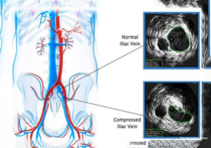

Multilingual Ambient Consultation Scribing, Clinical Coding and Order Management
A large-scale real-world deployment of over 1,000 consultations daily across 20 departments in 10+ Indian languages, used by 100+ superspecialists. The system enables multilingual ambient scribing, real-time ICD coding and structured order generation, with traceability from summary to source audio, medical text normalization, and accent/dialect robustness, powered by a context-adaptive reasoning engine.